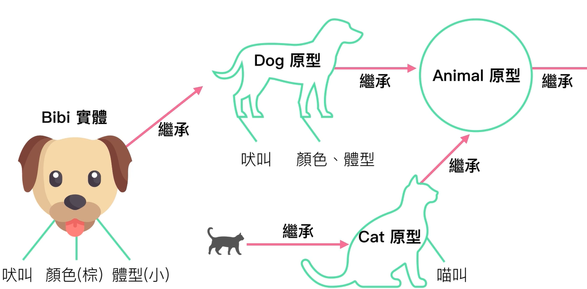
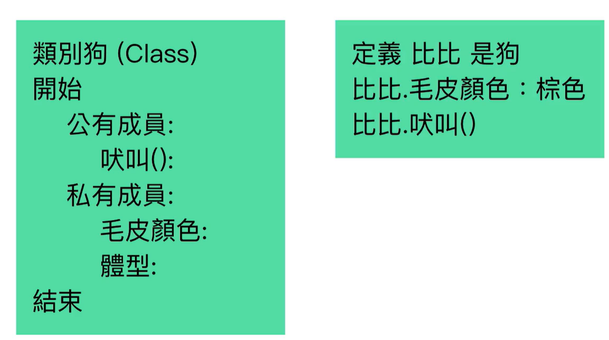

01-What-is-Function
02-IIFE
03-closure
04-new-operator
05-prototype
06-Object-create
07-Prototype_constructor
08-class
Class
- 狗的印象就是一個 class, 這個印象沒有辦法直接去運用它, 它只是一個想法
- 透過 new 的方法, 可以將狗給實體化出來, 稱為 instance
- 實體化的狗可以定義有甚麼樣的特徵, 色彩, 體型, 實體化的狗才能真的吠叫
- 實體化的狗是從狗這個思想所延伸出來, 稱為繼承
- 繼承的概念就是一個實體, 可以取用另外一個物件的屬性 & 方法
- 屬性: 色彩 & 大小, 方法: 吠叫

